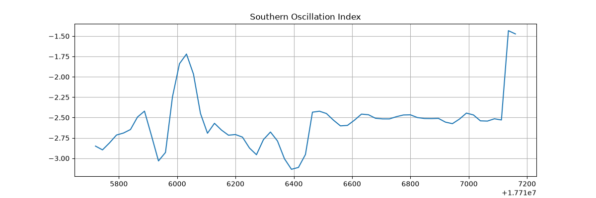

Statistical Inference¶
Simple seasonal statistic inference workflow.
This example will demonstrate how to run a simple inference workflow to generate a
forecast and then to save a statistic of that data. There are a handful of built-in
statistics available in earth2studio.statistics, but here we will demonstrate how
to define a custom statistic and run inference.
In this example you will learn:
- How to instantiate a built in prognostic model
- Creating a data source and IO object
- Create a custom statistic
- Running a simple built in workflow
- Post-processing results
Creating a Statistical Workflow¶
Start with creating a simple inference workflow to use. We encourage
users to explore and experiment with their own custom workflows that borrow ideas from
built in workflows inside earth2studio.run or the examples.
Creating our own generalizable workflow to use with statistics is easy when we rely on the component interfaces defined in Earth2Studio (use dependency injection). Here we create a run method that accepts the following:
- time: Input list of datetimes / strings to run inference for
- nsteps: Number of forecast steps to predict
- prognostic: Our initialized prognostic model
- statistic: our custom statistic
- data: Initialized data source to fetch initial conditions from
- io: IOBackend
We do not run an ensemble inference workflow here, even though it is common for statistical inference. See ensemble examples for details on how to extend this example for that purpose.
import os
os.makedirs("outputs", exist_ok=True)
from dotenv import load_dotenv
load_dotenv() # TODO: make common example prep function
from datetime import datetime
import numpy as np
import pandas as pd
from loguru import logger
from tqdm import tqdm
from earth2studio.data import DataSource, fetch_data
from earth2studio.io import IOBackend
from earth2studio.models.px import PrognosticModel
from earth2studio.statistics import Statistic
from earth2studio.utils.coords import map_coords
from earth2studio.utils.time import to_time_array
logger.remove()
logger.add(lambda msg: tqdm.write(msg, end=""), colorize=True)
def run_stats(
time: list[str] | list[datetime] | list[np.datetime64],
nsteps: int,
nensemble: int,
prognostic: PrognosticModel,
statistic: Statistic,
data: DataSource,
io: IOBackend,
) -> IOBackend:
"""Simple statistics workflow
Parameters
----------
time : list[str] | list[datetime] | list[np.datetime64]
List of string, datetimes or np.datetime64
nsteps : int
Number of forecast steps
nensemble : int
Number of ensemble members to run inference for.
prognostic : PrognosticModel
Prognostic models
statistic : Statistic
Custom statistic to compute and write to IO.
data : DataSource
Data source
io : IOBackend
IO object
Returns
-------
IOBackend
Output IO object
"""
logger.info("Running simple statistics workflow!")
# Load model onto the device
device = torch.device("cuda" if torch.cuda.is_available() else "cpu")
logger.info(f"Inference device: {device}")
prognostic = prognostic.to(device)
# Fetch data from data source and load onto device
time = to_time_array(time)
x, coords = fetch_data(
source=data,
time=time,
lead_time=prognostic.input_coords()["lead_time"],
variable=prognostic.input_coords()["variable"],
device=device,
)
logger.success(f"Fetched data from {data.__class__.__name__}")
# Set up IO backend
total_coords = coords.copy()
output_coords = prognostic.output_coords(prognostic.input_coords())
total_coords["lead_time"] = np.asarray(
[output_coords["lead_time"] * i for i in range(nsteps + 1)]
).flatten()
# Remove reduced dimensions from statistic
for d in statistic.reduction_dimensions:
total_coords.pop(d, None)
io.add_array(total_coords, str(statistic))
# Map lat and lon if needed
x, coords = map_coords(x, coords, prognostic.input_coords())
# Create prognostic iterator
model = prognostic.create_iterator(x, coords)
logger.info("Inference starting!")
with tqdm(total=nsteps + 1, desc="Running inference") as pbar:
for step, (x, coords) in enumerate(model):
s, coords = statistic(x, coords)
io.write(s, coords, str(statistic))
pbar.update(1)
if step == nsteps:
break
logger.success("Inference complete")
return io
Console output9 lines
/__w/earth2studio/earth2studio/.venv/lib/python3.13/site-packages/torch/cuda/__init__.py:64: FutureWarning: The pynvml package is deprecated. Please install nvidia-ml-py instead. If you did not install pynvml directly, please report this to the maintainers of the package that installed pynvml for you.
import pynvml # type: ignore[import]
WARNING[XFORMERS]: xFormers can't load C++/CUDA extensions. xFormers was built for:
PyTorch 2.10.0+cu128 with CUDA 1208 (you have 2.13.0+cu130)
Python 3.10.19 (you have 3.13.13)
Please reinstall xformers (see https://github.com/facebookresearch/xformers#installing-xformers)
Memory-efficient attention, SwiGLU, sparse and more won't be available.
Set XFORMERS_MORE_DETAILS=1 for more details
CuPy distance computation test failed with error: cuVS >= 24.12 or pylibraft < 24.12 should be installed to use this featureSet Up¶
With the statistical workflow defined, we now need to create the individual components.
We need the following:
- Prognostic Model: Use the built in Pangu 24 hour model
earth2studio.models.px.Pangu24. - statistic: We define our own statistic: the Southern Oscillation Index (SOI).
- Datasource: Pull data from the GFS data api
earth2studio.data.GFS. - IO Backend: Save the outputs into a NetCDF4 store
earth2studio.io.NetCDF4Backend.
from collections import OrderedDict
import fsspec
import numpy as np
import torch
from earth2studio.data import GFS
from earth2studio.io import NetCDF4Backend
from earth2studio.models.px import Pangu24
from earth2studio.utils.type import CoordSystem
# Load the default model package which downloads the check point from NGC
package = Pangu24.load_default_package()
model = Pangu24.load_model(package)
# Create the data source
data = GFS()
# Create the IO handler, store in memory
io = NetCDF4Backend(
file_name="outputs/soi.nc",
backend_kwargs={"mode": "w"},
)
# Create the custom statistic
class SOI:
"""Custom metric calculation the Southern Oscillation Index.
SOI = ( standardized_tahiti_slp - standardized_darwin_slp ) / soi_normalization
soi_normalization = std( historical ( standardized_tahiti_slp - standardized_darwin_slp ) )
standardized_*_slp = (*_slp - climatological_mean_*_slp) / climatological_std_*_slp
Note
----
__str__
Name that will be applied to the output of this statistic, primarily for IO purposes.
reduction_dimensions
Dimensions that this statistic reduces over. This is used to help automatically determine
the output coordinates, primarily used for IO purposes.
"""
def __str__(self) -> str:
return "soi"
def __init__(
self,
):
# Read in Tahiti and Darwin SLP data
url = "https://data.longpaddock.qld.gov.au/SeasonalClimateOutlook/SouthernOscillationIndex/SOIDataFiles/DailySOI1933-1992Base.txt"
with fsspec.open(url, "r") as f:
ds = pd.read_csv(f, sep=r"\s+")
dates = pd.date_range("1999-01-01", freq="d", periods=len(ds))
ds["date"] = dates
ds = ds.set_index("date")
ds = ds.drop(["Year", "Day", "SOI"], axis=1)
ds = ds.rolling(30, min_periods=1).mean().dropna()
self.climatological_means = torch.tensor(
ds.groupby(ds.index.month).mean().to_numpy(), dtype=torch.float32
)
self.climatological_std = torch.tensor(
ds.groupby(ds.index.month).std().to_numpy(), dtype=torch.float32
)
standardized = ds.groupby(ds.index.month).transform(
lambda x: (x - x.mean()) / x.std()
)
diff = standardized["Tahiti"] - standardized["Darwin"]
self.normalization = torch.tensor(
diff.groupby(ds.index.month).std().to_numpy(), dtype=torch.float32
)
self.tahiti_coords = {
"variable": np.array(["msl"]),
"lat": np.array([-17.65]),
"lon": np.array([210.57]),
}
self.darwin_coords = {
"variable": np.array(["msl"]),
"lat": np.array([-12.46]),
"lon": np.array([130.84]),
}
self.reduction_dimensions = list(self.tahiti_coords)
def __call__(
self, x: torch.Tensor, coords: CoordSystem
) -> tuple[torch.Tensor, CoordSystem]:
"""Computes the SOI given an input.
coords must be a superset of both
tahiti_coords = {
'variable': np.array(['msl']),
'lat': np.array([-17.65]),
'lon': np.array([210.57])
}
and
darwin_coords = {
'variable': np.array(['msl']),
'lat': np.array([-12.46]),
'lon': np.array([130.84])
}
So make sure that the model chosen predicts the `msl` variable.
Parameters
----------
x : torch.Tensor
Input tensor
coords : CoordSystem
coordinate system belonging to the input tensor.
Returns
-------
tuple[torch.Tensor, CoordSystem]
Returns the SOI and appropriate coordinate system.
"""
tahiti, _ = map_coords(x, coords, self.tahiti_coords)
darwin, _ = map_coords(x, coords, self.darwin_coords)
tahiti = tahiti.squeeze(-3, -2, -1) / 100.0
darwin = darwin.squeeze(-3, -2, -1) / 100.0
output_coords = OrderedDict(
{k: v for k, v in coords.items() if k not in self.reduction_dimensions}
)
# Get time coordinates
times = coords["time"].reshape(-1, 1) + coords["lead_time"].reshape(1, -1)
months = torch.broadcast_to(
torch.as_tensor(
[pd.Timestamp(t).month for t in times.flatten()],
device=tahiti.device,
dtype=torch.int32,
).reshape(times.shape),
tahiti.shape,
)
cm = self.climatological_means.to(tahiti.device)
cs = self.climatological_std.to(tahiti.device)
norm = self.normalization.to(tahiti.device)
tahiti_std_anomaly = (tahiti - cm[months, 0]) / cs[months, 0]
darwin_std_anomaly = (tahiti - cm[months, 1]) / cs[months, 1]
return (tahiti_std_anomaly - darwin_std_anomaly) / norm[months], output_coords
soi = SOI()
Console output60 lines
Downloading pangu_weather_24.onnx: 0%| | 0.00/1.10G [00:00<?, ?B/s]
Downloading pangu_weather_24.onnx: 1%| | 10.0M/1.10G [00:01<02:02, 9.55MB/s]
Downloading pangu_weather_24.onnx: 3%|▎ | 30.0M/1.10G [00:01<00:39, 29.3MB/s]
Downloading pangu_weather_24.onnx: 4%|▍ | 50.0M/1.10G [00:01<00:23, 47.6MB/s]
Downloading pangu_weather_24.onnx: 6%|▌ | 70.0M/1.10G [00:02<00:38, 28.9MB/s]
Downloading pangu_weather_24.onnx: 7%|▋ | 80.0M/1.10G [00:02<00:33, 32.8MB/s]
Downloading pangu_weather_24.onnx: 8%|▊ | 90.0M/1.10G [00:02<00:27, 39.5MB/s]
Downloading pangu_weather_24.onnx: 10%|▉ | 110M/1.10G [00:03<00:19, 55.6MB/s]
Downloading pangu_weather_24.onnx: 12%|█▏ | 130M/1.10G [00:03<00:14, 70.2MB/s]
Downloading pangu_weather_24.onnx: 13%|█▎ | 150M/1.10G [00:03<00:12, 80.9MB/s]
Downloading pangu_weather_24.onnx: 15%|█▌ | 170M/1.10G [00:03<00:10, 92.2MB/s]
Downloading pangu_weather_24.onnx: 17%|█▋ | 190M/1.10G [00:03<00:09, 103MB/s]
Downloading pangu_weather_24.onnx: 19%|█▊ | 210M/1.10G [00:03<00:09, 105MB/s]
Downloading pangu_weather_24.onnx: 20%|██ | 230M/1.10G [00:04<00:08, 112MB/s]
Downloading pangu_weather_24.onnx: 22%|██▏ | 250M/1.10G [00:04<00:07, 117MB/s]
Downloading pangu_weather_24.onnx: 24%|██▍ | 270M/1.10G [00:04<00:07, 118MB/s]
Downloading pangu_weather_24.onnx: 26%|██▌ | 290M/1.10G [00:04<00:07, 118MB/s]
Downloading pangu_weather_24.onnx: 28%|██▊ | 310M/1.10G [00:04<00:07, 121MB/s]
Downloading pangu_weather_24.onnx: 29%|██▉ | 330M/1.10G [00:04<00:06, 122MB/s]
Downloading pangu_weather_24.onnx: 31%|███ | 350M/1.10G [00:05<00:06, 120MB/s]
Downloading pangu_weather_24.onnx: 33%|███▎ | 370M/1.10G [00:05<00:06, 122MB/s]
Downloading pangu_weather_24.onnx: 35%|███▍ | 390M/1.10G [00:05<00:06, 124MB/s]
Downloading pangu_weather_24.onnx: 36%|███▋ | 410M/1.10G [00:05<00:06, 121MB/s]
Downloading pangu_weather_24.onnx: 38%|███▊ | 430M/1.10G [00:05<00:05, 124MB/s]
Downloading pangu_weather_24.onnx: 40%|███▉ | 450M/1.10G [00:05<00:05, 124MB/s]
Downloading pangu_weather_24.onnx: 42%|████▏ | 470M/1.10G [00:06<00:05, 122MB/s]
Downloading pangu_weather_24.onnx: 43%|████▎ | 490M/1.10G [00:06<00:05, 121MB/s]
Downloading pangu_weather_24.onnx: 45%|████▌ | 510M/1.10G [00:06<00:05, 122MB/s]
Downloading pangu_weather_24.onnx: 47%|████▋ | 530M/1.10G [00:06<00:05, 120MB/s]
Downloading pangu_weather_24.onnx: 49%|████▉ | 550M/1.10G [00:06<00:05, 120MB/s]
Downloading pangu_weather_24.onnx: 51%|█████ | 570M/1.10G [00:07<00:06, 88.1MB/s]
Downloading pangu_weather_24.onnx: 52%|█████▏ | 590M/1.10G [00:07<00:05, 93.9MB/s]
Downloading pangu_weather_24.onnx: 54%|█████▍ | 610M/1.10G [00:07<00:05, 99.5MB/s]
Downloading pangu_weather_24.onnx: 56%|█████▌ | 630M/1.10G [00:07<00:05, 103MB/s]
Downloading pangu_weather_24.onnx: 58%|█████▊ | 650M/1.10G [00:07<00:04, 103MB/s]
Downloading pangu_weather_24.onnx: 59%|█████▉ | 670M/1.10G [00:08<00:04, 105MB/s]
Downloading pangu_weather_24.onnx: 61%|██████ | 690M/1.10G [00:08<00:04, 109MB/s]
Downloading pangu_weather_24.onnx: 63%|██████▎ | 710M/1.10G [00:08<00:03, 112MB/s]
Downloading pangu_weather_24.onnx: 65%|██████▍ | 730M/1.10G [00:08<00:03, 114MB/s]
Downloading pangu_weather_24.onnx: 67%|██████▋ | 750M/1.10G [00:08<00:03, 116MB/s]
Downloading pangu_weather_24.onnx: 68%|██████▊ | 770M/1.10G [00:08<00:03, 120MB/s]
Downloading pangu_weather_24.onnx: 70%|███████ | 790M/1.10G [00:09<00:02, 119MB/s]
Downloading pangu_weather_24.onnx: 72%|███████▏ | 810M/1.10G [00:09<00:02, 120MB/s]
Downloading pangu_weather_24.onnx: 74%|███████▎ | 830M/1.10G [00:09<00:02, 120MB/s]
Downloading pangu_weather_24.onnx: 75%|███████▌ | 850M/1.10G [00:09<00:02, 121MB/s]
Downloading pangu_weather_24.onnx: 77%|███████▋ | 870M/1.10G [00:09<00:02, 123MB/s]
Downloading pangu_weather_24.onnx: 79%|███████▉ | 890M/1.10G [00:10<00:02, 124MB/s]
Downloading pangu_weather_24.onnx: 81%|████████ | 910M/1.10G [00:10<00:01, 125MB/s]
Downloading pangu_weather_24.onnx: 83%|████████▎ | 930M/1.10G [00:10<00:01, 122MB/s]
Downloading pangu_weather_24.onnx: 84%|████████▍ | 950M/1.10G [00:10<00:01, 125MB/s]
Downloading pangu_weather_24.onnx: 86%|████████▌ | 970M/1.10G [00:10<00:01, 127MB/s]
Downloading pangu_weather_24.onnx: 88%|████████▊ | 990M/1.10G [00:10<00:01, 126MB/s]
Downloading pangu_weather_24.onnx: 90%|████████▉ | 0.99G/1.10G [00:11<00:01, 122MB/s]
Downloading pangu_weather_24.onnx: 91%|█████████▏| 1.01G/1.10G [00:11<00:00, 107MB/s]
Downloading pangu_weather_24.onnx: 93%|█████████▎| 1.03G/1.10G [00:11<00:00, 107MB/s]
Downloading pangu_weather_24.onnx: 95%|█████████▍| 1.04G/1.10G [00:11<00:00, 112MB/s]
Downloading pangu_weather_24.onnx: 97%|█████████▋| 1.06G/1.10G [00:11<00:00, 116MB/s]
Downloading pangu_weather_24.onnx: 98%|█████████▊| 1.08G/1.10G [00:11<00:00, 118MB/s]
Downloading pangu_weather_24.onnx: 100%|██████████| 1.10G/1.10G [00:12<00:00, 122MB/s]
Downloading pangu_weather_24.onnx: 100%|██████████| 1.10G/1.10G [00:12<00:00, 97.4MB/s]Execute the Workflow¶
With all components initialized, running the workflow is a single line of Python code. Workflow will return the provided IO object back to the user, which can be used to then post process. Some have additional APIs that can be handy for post-processing or saving to file. Check the API docs for more information. We simulate a trajectory of 60 time steps, or 2 months using Pangu24
Console output73 lines
2026-08-19 21:33:15.948 | INFO | __main__:run_stats:59 - Running simple statistics workflow!
2026-08-19 21:33:15.948 | INFO | __main__:run_stats:62 - Inference device: cuda
Fetching GFS data: 0%| | 0/69 [00:00<?, ?it/s]
Fetching GFS data: 1%|▏ | 1/69 [00:02<02:53, 2.55s/it]
Fetching GFS data: 88%|████████▊ | 61/69 [00:02<00:00, 31.76it/s]
Fetching GFS data: 100%|██████████| 69/69 [00:02<00:00, 25.64it/s]
2026-08-19 21:33:30.999 | SUCCESS | __main__:run_stats:73 - Fetched data from GFS
2026-08-19 21:33:31.003 | INFO | __main__:run_stats:93 - Inference starting!
Running inference: 0%| | 0/61 [00:00<?, ?it/s]
Running inference: 3%|▎ | 2/61 [00:00<00:26, 2.22it/s]
Running inference: 5%|▍ | 3/61 [00:01<00:25, 2.29it/s]
Running inference: 7%|▋ | 4/61 [00:01<00:24, 2.30it/s]
Running inference: 8%|▊ | 5/61 [00:02<00:24, 2.32it/s]
Running inference: 10%|▉ | 6/61 [00:02<00:23, 2.32it/s]
Running inference: 11%|█▏ | 7/61 [00:03<00:23, 2.33it/s]
Running inference: 13%|█▎ | 8/61 [00:03<00:22, 2.34it/s]
Running inference: 15%|█▍ | 9/61 [00:03<00:22, 2.33it/s]
Running inference: 16%|█▋ | 10/61 [00:04<00:21, 2.34it/s]
Running inference: 18%|█▊ | 11/61 [00:04<00:21, 2.34it/s]
Running inference: 20%|█▉ | 12/61 [00:05<00:20, 2.34it/s]
Running inference: 21%|██▏ | 13/61 [00:05<00:20, 2.34it/s]
Running inference: 23%|██▎ | 14/61 [00:06<00:20, 2.34it/s]
Running inference: 25%|██▍ | 15/61 [00:06<00:19, 2.34it/s]
Running inference: 26%|██▌ | 16/61 [00:06<00:19, 2.34it/s]
Running inference: 28%|██▊ | 17/61 [00:07<00:18, 2.35it/s]
Running inference: 30%|██▉ | 18/61 [00:07<00:18, 2.34it/s]
Running inference: 31%|███ | 19/61 [00:08<00:17, 2.35it/s]
Running inference: 33%|███▎ | 20/61 [00:08<00:17, 2.35it/s]
Running inference: 34%|███▍ | 21/61 [00:09<00:17, 2.34it/s]
Running inference: 36%|███▌ | 22/61 [00:09<00:16, 2.34it/s]
Running inference: 38%|███▊ | 23/61 [00:09<00:16, 2.35it/s]
Running inference: 39%|███▉ | 24/61 [00:10<00:15, 2.34it/s]
Running inference: 41%|████ | 25/61 [00:10<00:15, 2.34it/s]
Running inference: 43%|████▎ | 26/61 [00:11<00:14, 2.34it/s]
Running inference: 44%|████▍ | 27/61 [00:11<00:14, 2.34it/s]
Running inference: 46%|████▌ | 28/61 [00:11<00:14, 2.34it/s]
Running inference: 48%|████▊ | 29/61 [00:12<00:13, 2.34it/s]
Running inference: 49%|████▉ | 30/61 [00:12<00:13, 2.34it/s]
Running inference: 51%|█████ | 31/61 [00:13<00:12, 2.34it/s]
Running inference: 52%|█████▏ | 32/61 [00:13<00:12, 2.34it/s]
Running inference: 54%|█████▍ | 33/61 [00:14<00:11, 2.34it/s]
Running inference: 56%|█████▌ | 34/61 [00:14<00:11, 2.34it/s]
Running inference: 57%|█████▋ | 35/61 [00:14<00:11, 2.34it/s]
Running inference: 59%|█████▉ | 36/61 [00:15<00:10, 2.34it/s]
Running inference: 61%|██████ | 37/61 [00:15<00:10, 2.33it/s]
Running inference: 62%|██████▏ | 38/61 [00:16<00:09, 2.34it/s]
Running inference: 64%|██████▍ | 39/61 [00:16<00:09, 2.33it/s]
Running inference: 66%|██████▌ | 40/61 [00:17<00:08, 2.33it/s]
Running inference: 67%|██████▋ | 41/61 [00:17<00:08, 2.33it/s]
Running inference: 69%|██████▉ | 42/61 [00:17<00:08, 2.33it/s]
Running inference: 70%|███████ | 43/61 [00:18<00:07, 2.34it/s]
Running inference: 72%|███████▏ | 44/61 [00:18<00:07, 2.33it/s]
Running inference: 74%|███████▍ | 45/61 [00:19<00:06, 2.33it/s]
Running inference: 75%|███████▌ | 46/61 [00:19<00:06, 2.33it/s]
Running inference: 77%|███████▋ | 47/61 [00:20<00:06, 2.33it/s]
Running inference: 79%|███████▊ | 48/61 [00:20<00:05, 2.32it/s]
Running inference: 80%|████████ | 49/61 [00:20<00:05, 2.33it/s]
Running inference: 82%|████████▏ | 50/61 [00:21<00:04, 2.32it/s]
Running inference: 84%|████████▎ | 51/61 [00:21<00:04, 2.33it/s]
Running inference: 85%|████████▌ | 52/61 [00:22<00:03, 2.32it/s]
Running inference: 87%|████████▋ | 53/61 [00:22<00:03, 2.33it/s]
Running inference: 89%|████████▊ | 54/61 [00:23<00:03, 2.32it/s]
Running inference: 90%|█████████ | 55/61 [00:23<00:02, 2.33it/s]
Running inference: 92%|█████████▏| 56/61 [00:24<00:02, 2.32it/s]
Running inference: 93%|█████████▎| 57/61 [00:24<00:01, 2.33it/s]
Running inference: 95%|█████████▌| 58/61 [00:24<00:01, 2.32it/s]
Running inference: 97%|█████████▋| 59/61 [00:25<00:00, 2.33it/s]
Running inference: 98%|█████████▊| 60/61 [00:25<00:00, 2.32it/s]
Running inference: 100%|██████████| 61/61 [00:26<00:00, 2.33it/s]
Running inference: 100%|██████████| 61/61 [00:26<00:00, 2.33it/s]
2026-08-19 21:33:57.159 | SUCCESS | __main__:run_stats:102 - Inference completePost Processing¶
The last step is to post process our results.
Notice that the NetCDF IO function has additional APIs to interact with the stored data.
import matplotlib.pyplot as plt
times = io["time"][:].flatten() + io["lead_time"][:].flatten()
fig = plt.figure(figsize=(12, 4))
ax = fig.add_subplot(1, 1, 1)
ax.plot(times, io["soi"][:].flatten())
ax.set_title("Southern Oscillation Index")
ax.grid("on")
plt.savefig("outputs/07_southern_oscillation_index_prediction_2022.png")
io.close()
